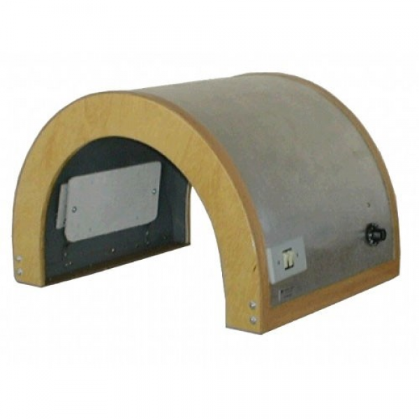

Forno de Bier
Conceito
{{fornodebier.conceito}}
Modo de Uso
{{objeto_fornodebier.modo_de_uso}}
Parâmetros
{{objeto_fornodebier.parametro}}
Tempo de Aplicação
{{objeto_fornodebier.tempoDeAplicacao}}
Frequência
{{objeto_fornodebier.frequencia}}
{{objeto_fornodebier.obs}}
Indicações e Contraindicações
Indicações:
- {{objeto_fornodebier.indicacao1}}
- {{objeto_fornodebier.indicacao2}}
- {{objeto_fornodebier.indicacao3}}
- {{objeto_fornodebier.indicacao4}}
Contraindicações
- {{objeto_fornodebier.contraindicacao1}}
- {{objeto_fornodebier.contraindicacao2}}
- {{objeto_fornodebier.contraindicacao3}}
- {{objeto_fornodebier.contraindicacao4}}
- {{objeto_fornodebier.contraindicacao5}}
- {{objeto_fornodebier.contraindicacao6}}
- {{objeto_fornodebier.contraindicacao7}}
- {{objeto_fornodebier.contraindicacao8}}